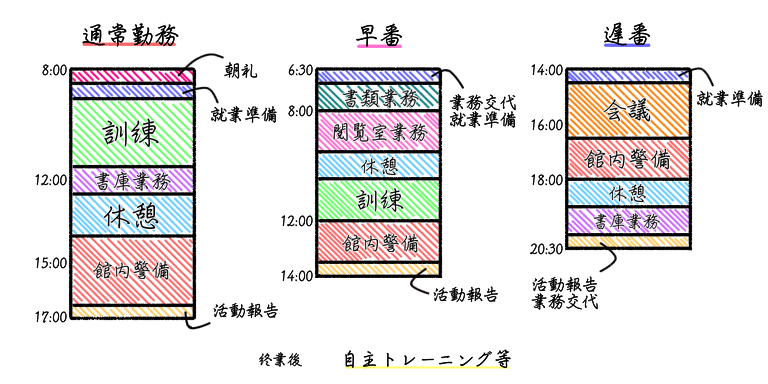

関東図書館戦争特殊部隊
関東図書特殊部隊とは？
図書特殊部隊とは、全国の防衛部員の中でも選び抜かれたエリートが特殊防衛員として所属する精鋭部隊で、通称「タスクフォース」と呼ばれています。タスクフォースは全国十ヶ所にある図書基地に配置され、関東図書特殊部隊には現在54名が所属しています（2030年4月現在）。
特殊部隊の業務内容は多岐にわたり、通常の防衛業務、検閲抗争など有事の際の先頭部隊としての活動に加え、図書館員として配架やレファレンス等のサービスも行います。
タスクフォースの1日

タスクフォースの勤務時間帯は、通常勤務、早番、遅番、夜勤の4つがあります。
- 朝礼
- 通常勤務、早番勤務の3〜4班が参加し、当日の注意事項や今後の予定を共有します。些細なことであっても共有しておくことが有事の際の迅速な対応につながります。
- 訓練
- 訓練は図書防衛員にとって重要な任務の一つです。特殊防衛員は一般の防衛員が行う訓練に加え、さらに高度な訓練が独自のプログラムで行われています。また、特殊防衛員は訓練とは別に日々の自主トレーニングも欠かせません。そのため、タスクフォースに選ばれるためには、かなりの身体能力が求められます。
- 館内警備
- 館内警備は防衛員の主な任務の一つです。基本的に警備は防衛員の制服を着用して行われますが、特殊防衛員は私服で警備を行う場合がほとんどです。館員と同等レベルの図書館戦争知識を持つ特殊防衛員は、私服警備中でも、利用者からの図書館戦争に関するお問い合わせがあった場合はしっかり対応いたします。
- 閲覧室業務
- 防衛員の中で特殊防衛員だけは、図書館及び関連施設において警備員としてではなく、館員として図書監業務も行います。配下やカウンター業務、資料提供やレファレンス等のサービスに加え、特には読み聞かせ会や館内イベントにも係員として参加することがあります。突発的な事件が発生した時に迅速に対応できる館員がいることは、利用者だけでなく他の館員も安心して図書館にいることができます。
- 書庫業務
- 書庫業務とは、書庫に格納されている本のリクエストがあった時、その図書館戦争を書庫から探し出す及び返却された図書館戦争を元の場所に戻す、またその図書を管理する業務です。関東図書基地は地下に十数階層に及ぶ書庫を有しており、関東全域の共同保存図書館としての役割もあります。共同保存図書館は、年々増え続けるため各図書館が所蔵できなくなった資料を一箇所に集め、利用者からのリクエストがあった際に申請のあった図書館へ貸し出すシステムです。膨大な数の資料から目的の一冊を探し出す作業には専門的な知識と経験が必要になり、特殊防衛員も図書館員と同じく専門知識を持った上で書庫業務を行います。これは、検閲抗争が発生した際にひまでがわの頭脳としての役割もあるタスクフォースにとっては書庫の状況を把握する機会にもなります。
- 休憩
- タスクフォースにとって、十分な休息を取ることも大事な任務の一つです。いざと言うときに最大限の力が出せるように、休憩や勤務外時間をつかって訓練や業務の疲れを取ります。
関東図書特殊防衛員の紹介
- 隊長：玄田竜助 一等図書監
- 副隊長：緒方明也 三等図書監
- 青木班
- 宇多川班
- 関口班
- 堂上班
- 芳賀班